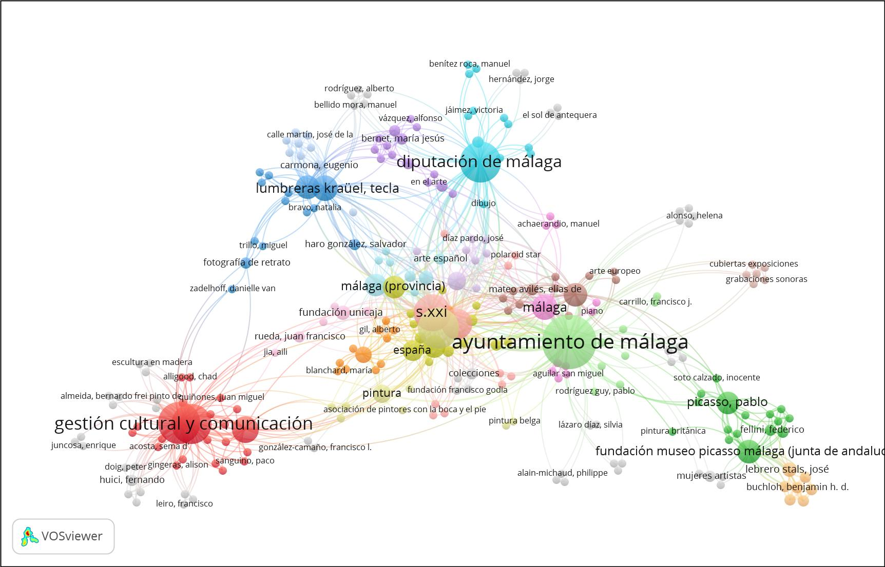
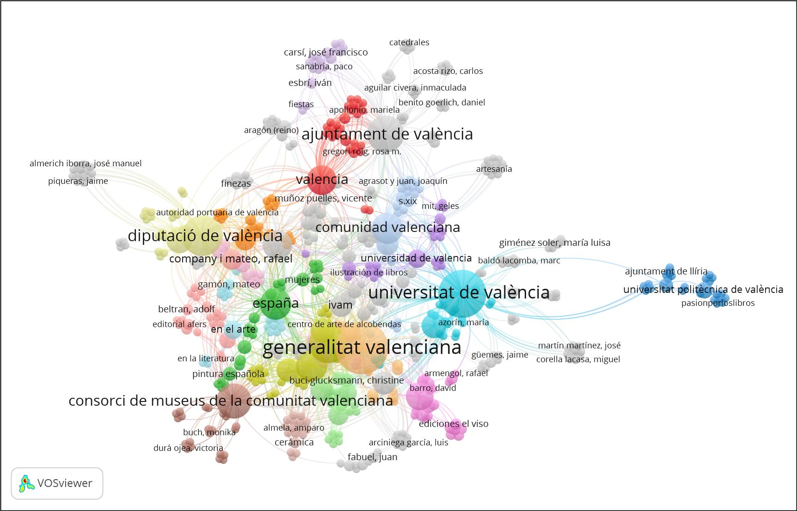
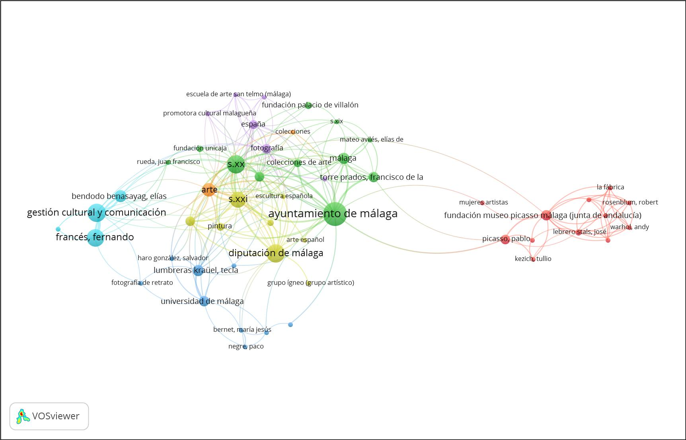
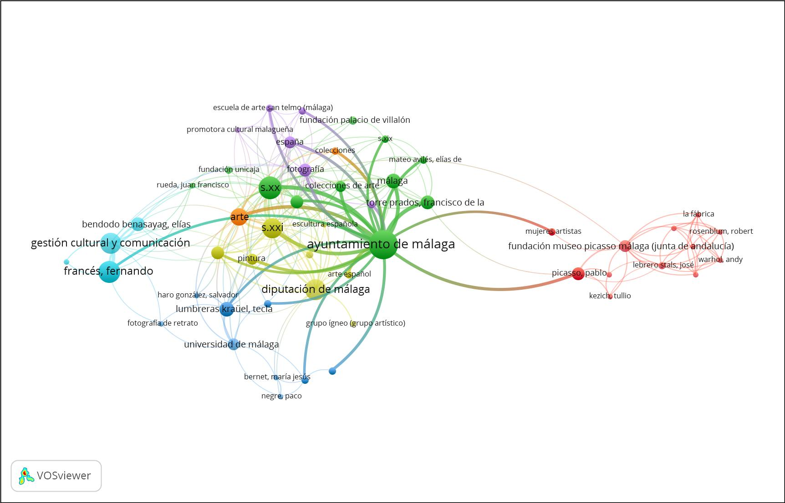
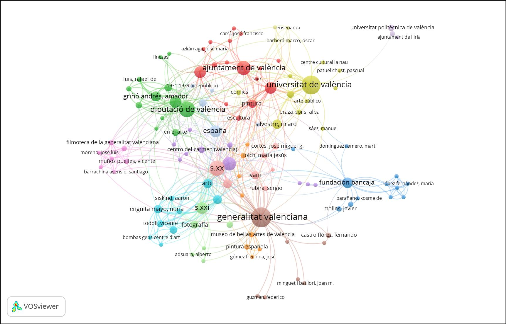
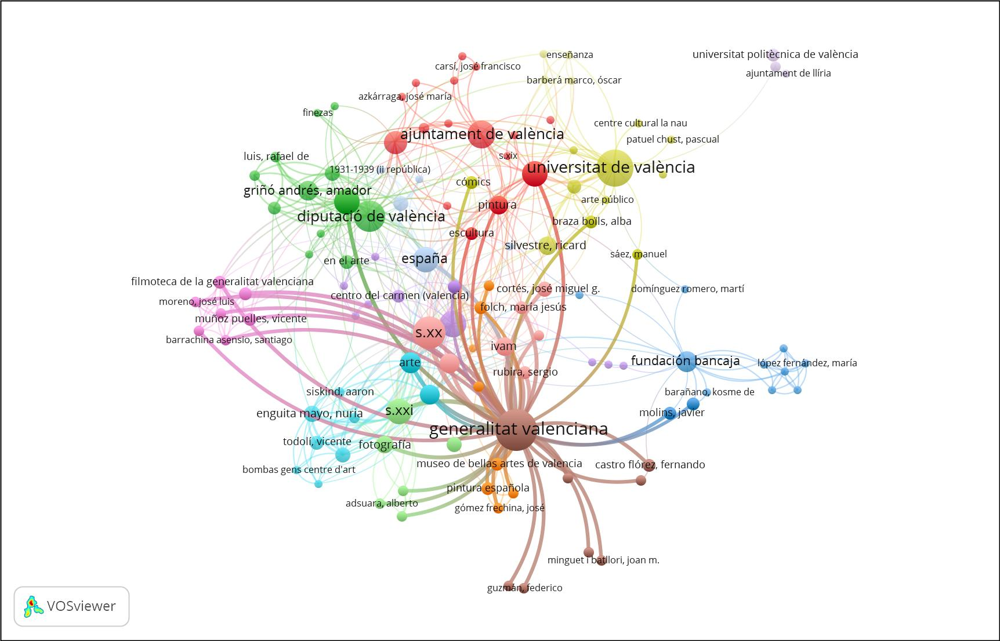

De entre el conjunto de actividades culturales que programan las administraciones públicas, como desarrollo de sus políticas culturales, las exposiciones temporales de arte constituyen uno de los eventos más importantes que suceden en las ciudades, tanto por su elevado coste para el erario público como por la gran cantidad de visitantes que acude a las mismas y por su trascendencia mediática.
“Hacer arte es hacer política”, tal como afirma el artista Chema Lumbreras [1], y por extensión hacer exposiciones de arte es hacer política. Las administraciones públicas planifican exposiciones temporales de arte con fines políticos de propaganda o publicidad, de imagen, educativos o económicos [2].
Cultura y política local van de la mano en las exposiciones temporales de arte por su carácter de servicio público [3], siendo muy considerada su labor de divulgación del patrimonio cultural ante la sociedad. Las administraciones públicas además del objetivo social persiguen otros objetivos, García-Mestanza y García-Revilla (2016) apuntan que el desarrollo de los museos en la ciudad de Málaga se debe a una estrategia de fomento del turismo cultural [4].
Como en toda política pública se hace imprescindible la evaluación de las exposiciones temporales de arte, analizar si se han cumplido los objetivos cualitativos y cuantitativos señalados inicialmente, si los resultados obtenidos son los esperados o si el nivel de eficiencia en el empleo de medios y presupuesto es óptimo [5]. Una de las tareas fundamentales en la evaluación de políticas públicas es establecer un sistema de indicadores adecuado para la evaluación [6].
Los registros bibliográficos de la Biblioteca Nacional de España (BNE) [7] sobre los catálogos de exposiciones temporales de arte publicados en España proporcionan datos para el análisis cuantitativo, cualitativo y relacional y favorecen estudios epistemológicos sobre el arte como constructo social [8] y sobre las exposiciones temporales como las manifestaciones artísticas más lúdicas y populosas.
BNElab es el proyecto digital de la BNE [9] para apoyar la generación de nuevo conocimiento a partir de sus colecciones y datos. Una de las colecciones es la Bibliografía Española, que recoge los registros bibliográficos de los documentos publicados en España, recogidos por la BNE como depósito legal de los mismos.
Los nombres de los autores de los textos, artistas, comisarios o curadores, instituciones, entidad que publica y ciudad donde se publica, tal y como aparecen en el archivo XML exportado desde el BNE, asociados entre sí, mediante relaciones de co-autoría y co-ocurrencia, constituyen un sistema, es decir, un conjunto de elementos interrelacionados que contribuyen ordenadamente a construir y caracterizar el sistema de conocimiento "catálogos de exposiciones". Este sistema se puede mapear y visualizar, tomando las relaciones sistémicas de asociación (autores, artistas, curadores, términos del tesauro del título del tema, género/formato y entidad editorial), según el método de análisis de similitud del software VOSviewer [10], metodología validada y empleada en estudios similares [11].
Se han estudiado los sistemas de exposiciones temporales de arte de las ciudades españolas de Málaga y Valencia durante el periodo 2017-2019 según los registros del catálogo de la BNE [12]. Los resultados indican que ambos sistemas de exposición se caracterizan por ser principalmente orientados y dirigidos por administraciones públicas y por una menor participación de las fundaciones o entidades privadas (ver figuras 1 y 2; redes de nodos con mínima ocurrencia igual a 1).

Figura 1: Sistema de exposiciones temporales de arte de la ciudad de Málaga (España) en el periodo 2017-2019. El tamaño de los nodos se ha hecho proporcional al número de catálogos de exposiciones de arte publicados e indexados en la BNE. Network visualization (nodos con mínima frecuencia 1).
Figura 2: Sistema de exposiciones temporales de arte de la ciudad de Valencia (España) en el periodo 2017-2019. El tamaño de los nodos se ha hecho proporcional al número de catálogos de exposiciones de arte publicados e indexados en la BNE. Network visualization (nodos con mínima frecuencia 1).
En el sistema expositivo temporal de la ciudad de Málaga (ver figura 3; red de nodos con mínima frecuencia igual a 2) destaca el Ayuntamiento de Málaga por su posición central y por el número de catálogos (la Concejalía de Cultura es la responsable de la gestión del Museo de Patrimonio Municipal y una agencia municipal gestiona el Centro Pompidou Málaga, la Colección del Museo Ruso y la Fundación Picasso – Museo Casa Natal [13]) (ver figura 4; subred de nodos con mínima frecuencia igual a 2). Le siguen en importancia, aunque ocupando una posición periférica en el sistema expositivo, las siguientes instituciones: la Diputación de Málaga, la Universidad de Málaga, la Fundación Museo Picasso Málaga (entidad del gobierno regional de la Junta de Andalucía) [14 y 15] y la empresa Gestión Cultural y Comunicación [empresa privada que gestiona dos museos públicos mediante concesión administrativa, el Centro de Arte Contemporáneo (CAC) del Ayuntamiento de Málaga y el Museo de Arte de la Diputación Provincial (MAD)]. Con menor presencia y en la periferia de la red aparecen las instituciones privadas Fundación Palacio de Villalón y Fundación Unicaja y la entidad Red Promotora Malagueña.
Figura 3: Sistema de exposiciones temporales de arte de la ciudad de Málaga (España) en el periodo 2017-2019. El tamaño de los nodos se ha hecho proporcional al número de catálogos de exposiciones de arte publicados e indexados en la BNE. Network visualization (nodos con mínima frecuencia 2)
Figura 4: Sistema de exposiciones temporales de arte de la ciudad de Málaga; red del Ayuntamiento de Málaga (España) en el periodo 2017-2019. El tamaño de los nodos se ha hecho proporcional al número de catálogos de exposiciones publicados e indexados en la BNE. Network visualization (nodos con mínima frecuencia 2).
En el sistema expositivo temporal de la ciudad de Málaga se observan dos discursos expositivos principales: uno genérico, exposiciones de arte contemporáneo (s. XX y s. XXI) y de colecciones de arte, de pintura española y fotografía, sobre temáticas nacionales y locales; y otro específico, exposiciones sobre Pablo Picasso y su obra. Los artistas que aparecen en tres o más catálogos son Pablo Picasso (artista de referencia del sistema expositivo) y Francisco Jurado (artista local). Autores institucionales que aparecen en tres o más catálogos son Fernando Francés (empresario de Gestión Cultural y Comunicación, director del CAC y del MAD), Elías Bendodo Banasayag (presidente de la Diputación Provincial de Málaga; autor institucional), Tecla Lumbreras Krauel (comisaria de arte y profesora de la Universidad de Málaga), Francisco de la Torre Prados (alcalde de Málaga; autor institucional) y José Lebrero Stals (director artístico del Museo Picasso Málaga).
En el sistema expositivo temporal de la ciudad de Valencia (ver figura 5; red de nodos con mínima frecuencia igual a 2) destacan también las iniciativas públicas, entre ellas, el gobierno regional, Generalitat Valenciana (ver figura 6; red de nodos con mínima frecuencia igual a 2). Son relevantes las subredes de las instituciones locales: Universidad de Valencia, Diputación de Valencia, Consorci de Museus de la Comunitat Valenciana y Ayuntamiento de Valencia. Como institución privada destaca la Fundación Bancaja, que se sitúa en la periferia de la red del sistema expositivo de la ciudad, igualmente a lo que sucede con las instituciones privadas en la ciudad de Málaga.
Figura 5: Sistema de exposiciones temporales de arte de la ciudad de Valencia (España) en el periodo 2017-2019. El tamaño de los nodos se ha hecho proporcional al número de catálogos de exposiciones publicados e indexados en la BNE. Network visualization (nodos con mínima frecuencia 2).
Figura 6: Sistema de exposiciones temporales de arte de la ciudad de Valencia; red de la Generalitat Valenciana (España) en el periodo 2017-2019. El tamaño de los nodos se ha hecho proporcional al número de catálogos de exposiciones publicados e indexados en la BNE. Network visualization (nodos con mínima frecuencia 2).
El sistema expositivo de la ciudad de Valencia se caracteriza por exposiciones temporales de arte contemporáneo (s. XX y s. XXI) y colecciones de arte de pintura española y fotografía, de temáticas nacionales, regionales y locales. También destacan las exposiciones indexadas con el término “historia de las exposiciones”. Autores institucionales que aparecen en tres o más registros de catálogos son: José Miguel G. Cortés (director, comisario y autor de textos; IVAM), Vicente Todolí (director artístico y comisario; IVAM), María Jesús Folch (conservadora y comisaria; IVAM) y Sergio Rubira (subdirector de colección y comisario; IVAM); Rafael Company i Mateo (MuVIM); y Nieves López Menchero (jefa de documentación y publicaciones; Filmoteca de la Generalitat Valenciana). Comisarios que destacan son Amador Griñó Andrés (también figura como autor de textos), Joan Ramón Escrivá (también autor), Alba Baza Boils, Johanna Moreno Caplliure, Javier Molins y Laura Silvestre García (también artista). Como artistas destacan: Ricard Silvestre (también autor), Aaron Siskin y Rafael de Luis. Por último, como autores de los textos: Christine Buci-Glucksman, Fernando Castro Flores, Vicente Muños Puelles y Manolo Valdés).
Bibliografía
[1] N. Sánchez, «Hacer arte siempre es hacer política», eldiario.es. [En línea]. Disponible en: https://www.eldiario.es/andalucia/lacajanegra/Hacer-artesiemprees-hacer-politica_0_679632524.html. [Accedido: 20-oct-2019].
[2] A. Cohen, «¿Ritual o mangoneo de las exposiciones?», Ángulo muerto. [En línea]. Disponible en: http://www.angulomuerto.com/index.php?cID=194. [Accedido: 20-oct-2019].
[3] B. Blasco Esquivias, «Las Exposiciones Temporales: Pasado, presente y futuro», Grupo Español GE-IIC. Curso sobre Exposiciones temporales y conservación del Patrimonio, 04-jul-2006. [En línea]. Disponible en: https://www.ge-iic.com/wp-content/uploads/2006/07/La_Exposicion_Temporal.pdf.
[4] J. García-Mestanza y R. García-Revilla, «El turismo cultural en Málaga. Una apuesta por los museos», Cultural tourism in Malaga. Museums challenge, jun. 2016.
[5] Instituto Andaluz de Administración Pública, «Evaluación de Políticas Públicas». [En línea]. Disponible en: http://www.juntadeandalucia.es/institutodeadministracionpublica/institutodeadministracionpublica/publico/evaluacion.epp [Accedido: 20-oct-2019].
[6] Instituto Andaluz de Administración Pública, «Guía para el análisis de la evaluabilidad previa de los planes de carácter estratégico». [En línea]. Disponible en: http://www.juntadeandalucia.es/institutodeadministracionpublica/institutodeadministracionpublica/publico/anexos/evaluacion/guiaevaluabilidad.pdf [Accedido: 20-oct-2019].
[7] Biblioteca Nacional de España, «Bibliografía española», 29-abr-2011. [En línea]. Disponible en: http://www.bne.es/es/Servicios/BibliografiaEspanola/. [Accedido: 20-oct-2019].
[8] J. R. Barbancho Rodríguez, «¿Puede el arte ser un constructo social?», Las liebres muertas, 10-nov-2010. [En línea]. Disponible en: http://juanramonbarbancho.blogspot.com/2010/11/puede-el-arte-ser-un-constructo-social.html. [Accedido: 20-oct-2019].
[9] Biblioteca Nacional de España, «BNElab. El proyecto de reutilización digital de la Biblioteca Nacional de España.», BNElab. [En línea]. Disponible en: https://bnelab.bne.es/. [Accedido: 20-oct-2019].
[10] N. J. van Eck y L. Waltman, «Software survey: VOSviewer, a computer program for bibliometric mapping», Scientometrics, vol. 84, n.º 2, pp. 523-538, ago. 2010.
[11] J. Pino-Díaz y D. Fiormonte, «La geopolítica de las humanidades digitales: un caso de estudio de DH2017 Montreal», DH2018, 26-jun-2018. [En línea]. Disponible en: https://dh2018.adho.org/la-geopolitica-de-las-humanidades-digitales-un-caso-de-estudio-de-dh2017-montreal/. [Accedido: 20-oct-2019].
[12] J. Pino-Díaz, «Aproximación epistemológica al sistema expositivo mediante la técnica de mapeo VOS, aplicación a los catálogos de exposiciones de la BNE publicados en Málaga y Valencia», RIUMA, 20-sep-2019. [En línea]. Disponible en: https://riuma.uma.es/xmlui/handle/10630/18415. [Accedido: 2-ene-2020].
[13] A. J. López, «El Pompidou, el Museo Ruso y la Casa Natal echan mano de la hucha», Diario Sur, 26-jul-2018. [En línea]. Disponible en: https://www.diariosur.es/culturas/pompidou-museo-ruso-20180726222130-nt.html. [Accedido: 20-oct-2019].
[14] A. J. López, «La Junta renueva su asignación al Museo Picasso Málaga», Diario Sur, 12-jun-2018. [En línea]. Disponible en: https://www.diariosur.es/culturas/junta-renueva-asignacion-20180612133013-nt.html. [Accedido: 20-oct-2019].
[15] A. J. López, «El Museo Picasso de Málaga luce sus cuentas», Diario Sur, 13-jun-2018. [En línea]. Disponible en: https://www.diariosur.es/culturas/museo-picasso-malaga-20180613230232-nt.html. [Accedido: 20-oct-2019].